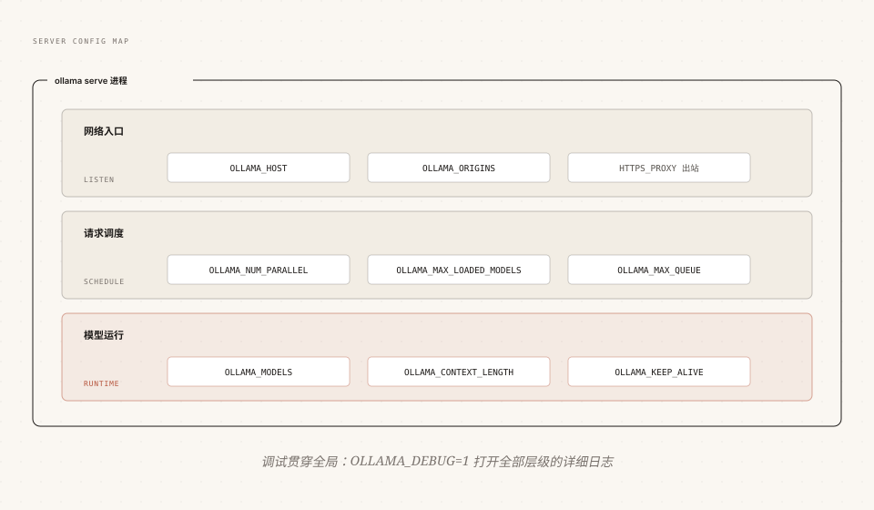

Ollama 環境変数とサービス設定
Ollama には従来の設定ファイルがなく、サービスの動作はほぼすべて環境変数で制御される：リッスンアドレス、モデルパス、コンテキスト、並行処理、プロキシ、デバッグ。
この章では、まず3プラットフォームでの設定方法を説明し、次にネットワーク入口、リクエストスケジューリング、モデル実行の3つの側面から各コア変数を解説する。
設定変数のサービス内での位置
まず全体像を把握しよう：十数個の環境変数は対等ではなく、それぞれサービスプロセスの異なる段階に作用する。

現在のバージョンでサポートされている完全な変数リストを確認するには、ollama serve --help を実行すればよい。
3プラットフォームでの環境変数の設定方法
同じ変数でも、3つのプラットフォームでは設定方法がまったく異なる。これが初心者が最もつまずきやすいポイントだ。
macOS：launchctl
Ollama をアプリとして実行する場合、環境変数は launchctl で注入し、設定後はアプリを再起動して有効にする：
例
launchctl setenv OLLAMA_HOST "0.0.0.0:11434"
# その後、Ollama アプリを終了して再度開く
Linux：systemd サービスのオーバーライド
例
sudo systemctl edit ollama.service
# エディタに追加（必ず [Service] セクションの下に置くこと）：
# [Service]
# Environment="OLLAMA_HOST=0.0.0.0:11434"
# サービスをリロードして再起動
sudo systemctl daemon-reload
sudo systemctl restart ollama
Windows：システム環境変数
スタートメニューで「環境変数」を検索し、「アカウントの環境変数の編集」を選択。変数を新規作成または編集して保存する。
重要な手順：まずトレイの Ollama を終了し、保存後はスタートメニューから再起動する。そうして初めて新しい変数が新しいプロセスで有効になる。
さらに、少量のオン/オフ型設定を行うための JSON 設定ファイル server.json（~/.ollama/ に配置）がある。例えばクラウド機能を無効にするには {"disable_ollama_cloud": true} を書き込む。大半の設定は依然として環境変数が優先される。
ネットワーク入口：HOST、ORIGINS とプロキシ
OLLAMA_HOST：LANからモデルにアクセスできるようにする
デフォルトでは 127.0.0.1 のみをリッスンし、ローカルマシンだけで利用できる。LAN 内の他のデバイスから呼び出したい場合は、すべてのネットワークインターフェースをリッスンするように変更する：
例
OLLAMA_HOST=0.0.0.0:11434 ollama serve
# 他のデバイスで確認（実際のIPに置き換え）
curl http://192.168.1.100:11434/api/version
LAN に開放することは、認証なしのモデルサービスを同じネットワークセグメントの全デバイスに公開することに等しい。家庭ネットワークでは許容できるが、社内ネットワークでは必ずファイアウォールルールやリバースプロキシと併用すること（詳細はプライベートデプロイメントの章で説明）。
OLLAMA_ORIGINS：クロスオリジン許可
Ollama はデフォルトでは 127.0.0.1 と 0.0.0.0 からのクロスオリジンリクエストのみを受け付ける。Webページやブラウザ拡張機能がローカル API に直接接続する場合は、明示的に許可する必要がある：
例
OLLAMA_ORIGINS=chrome-extension://*,moz-extension://*,safari-web-extension://* ollama serve
プロキシ：HTTPS_PROXY のみ
モデルのダウンロードは HTTPS で外部へ送信される。ネットワークが制限された環境では、HTTPS_PROXY でプロキシを指定すればよい。
HTTPS_PROXY のみを設定し、HTTP_PROXY は設定しないこと：Ollama はモデルのプルに HTTP を使用しない。HTTP プロキシを追加で設定すると、かえってクライアントとサーバー間の接続を切断する可能性がある。Docker の場合は、コンテナ起動時に -e HTTPS_PROXY=... を渡す。自己署名証明書を使用するプロキシの場合は、CA 証明書をシステムにインストールする（またはイメージに組み込む）必要がある。
モデル実行：パス、コンテキスト、常駐
OLLAMA_MODELS：モデルを別のドライブに保存
デフォルトではモデルはユーザーディレクトリに保存される。3プラットフォームのパスは次のとおり：
| プラットフォーム | デフォルトのモデルパス |
|---|---|
| macOS | ~/.ollama/models |
| Linux | /usr/share/ollama/.ollama/models |
| Windows | C:\Users\<用户名>\.ollama\models |
OLLAMA_MODELS を新しいディレクトリに指定すれば移行全体が完了する。ダウンロード済みのモデルファイルを移動すれば、そのまま使用できる。
例
OLLAMA_MODELS=/data/ollama-models ollama serve
# 注意：標準インストールの Linux では ollama ユーザーでサービスを実行
# 新しいディレクトリは所有者を移行する必要がある。そうしないとサービスに読み書き権限がない
sudo chown -R ollama:ollama /data/ollama-models
OLLAMA_CONTEXT_LENGTH：グローバルコンテキスト
全モデルのデフォルトコンテキスト長を設定する。モデルまたはリクエストレベルで個別に指定されていない場合に有効：
例
OLLAMA_CONTEXT_LENGTH=8192 ollama serve
優先度は高い順に：API リクエストの options.num_ctx、Modelfile の PARAMETER num_ctx、この環境変数、GPUメモリに基づく自動階層デフォルト値。
OLLAMA_KEEP_ALIVE：グローバル常駐時間
モデルロード後の常駐時間を一括で調整する。値の形式は API の keep_alive パラメータと同じ：
例
OLLAMA_KEEP_ALIVE=30m ollama serve
API リクエストで個別に渡す keep_alive はこのグローバル値より優先される。「グローバルは10分、重要モデルは常駐」という階層戦略が可能。
リクエストスケジューリング：並行処理の3点セット
Ollama は2段階の並行処理をサポートする：複数モデルの同時常駐と、単一モデルによる複数リクエストの並列処理。それぞれを制御する変数がある。
| 変数 | デフォルト値 | 役割 |
|---|---|---|
| OLLAMA_NUM_PARALLEL | 1 | 単一モデルが同時に処理するリクエスト数。必要なメモリは「この値 × コンテキスト長」で増大する |
| OLLAMA_MAX_LOADED_MODELS | 3 × GPU 数（CPU 推論では 3） | 同時にロードできるモデルの総数。GPUメモリ/メモリに収まることが前提 |
| OLLAMA_MAX_QUEUE | 512 | サービスが輻輳しているときの最大待機リクエスト数。超過すると直接 503 を返す |
スケジューリングロジックは理解に値する：GPUメモリが十分な場合はモデルがリクエストを並列処理する。GPUメモリが不足している場合は新しいリクエストは待機し、遊休状態のモデルがアンロードされてスペースが確保されるのを待つ。
NUM_PARALLEL は最も陥りやすい変数だ：4 に設定すると、コンテキストキャッシュが4倍になり、GPUメモリが瞬時に4倍になる。そのためモデルが GPU から追い出される可能性もある。マルチユーザーで共有インスタンスを計画する方法はプライベートデプロイメントの章で詳述する。
デバッグとログ：OLLAMA_DEBUG
問題を調査する最初のステップは、常にデバッグを有効にしてログを確認することだ。
例
OLLAMA_DEBUG=1 ollama serve
Windows グラフィックアプリでデバッグを有効にする方法：まずトレイからアプリを終了し、PowerShell で以下を実行：
例
& "ollama app.exe"
4つの環境のログ場所のまとめ：
| 環境 | ログの場所 |
|---|---|
| macOS | ~/.ollama/logs/server.log |
| Linux（systemd） | journalctl -u ollama --no-pager --follow --pager-end |
| Windows | %LOCALAPPDATA%\Ollama\server.log |
| Docker | docker logs <コンテナ名>（stdout/stderr） |
その他の実用変数クイックリファレンス
残りの変数は特定のシナリオに紐づくものが多い。完全な章別解説は対応するテーマの章で展開する。ここではまずインデックスを提示する。
| 変数 | 例の値 | 役割 |
|---|---|---|
| OLLAMA_FLASH_ATTENTION | 1 / 0 | Flash Attention を強制的に有効/無効にする。長いコンテキストで GPUメモリを大幅に節約（GPU の章で詳述） |
| OLLAMA_KV_CACHE_TYPE | q8_0 / q4_0 | KV キャッシュの量子化タイプ。Flash Attention と併用が必要（GPU の章で詳述） |
| OLLAMA_VULKAN | 0 | Vulkan バックエンドを無効化（Vulkan が異常なときのスイッチ） |
| OLLAMA_LLM_LIBRARY | cpu_avx2 | 推論ライブラリを強制指定し、自動検出を回避 |
| OLLAMA_TMPDIR | /data/tmp | 一時ディレクトリの場所を変更（システムの /tmp が noexec でマウントされている場合） |
| OLLAMA_NO_CLOUD | 1 | クラウドモデルとオンライン検索を無効化し、純粋なローカルモード |
クリックしてノートを共有
ノートはこの記事の内容の拡張である必要があります！
記事の投稿は、ここをクリックしてください
登録招待コードの取得方法
ノートを共有する前に必ずログイン！
登録招待コードの取得方法